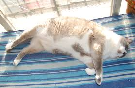
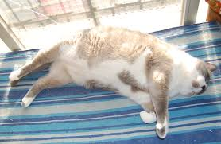
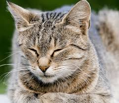
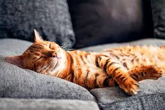

Gatos en la antigüedad
Los gatos egipcios y mesopotámicos eran considerados sagrados y protectores del hogar.
Un lugar dedicado a los felinos más adorables y curiosos
Desde los templos egipcios hasta las casas modernas, los gatos siempre han acompañado a los humanos.
Los gatos egipcios y mesopotámicos eran considerados sagrados y protectores del hogar.
Durante siglos los gatos se asociaron con la buena suerte y la compañía en los hogares.

Hoy en día, los gatos son mascotas queridas y protagonistas de internet.
Los gatos europeos se han adaptado a la vida urbana y rural, destacando por su personalidad.
En regiones cálidas, los gatos disfrutan del sol y de la compañía de sus familias humanas.
En Andalucía, los gatos callejeros y domésticos conviven armoniosamente, siendo parte del paisaje urbano.
Los gatos son curiosos, ágiles y a veces traviesos. Duermen muchas horas, pero siempre encuentran tiempo para explorar.
"Los gatos eligen a sus humanos. Jamás al revés."
| Acción | Significado | Probabilidad de caos | Estado emocional |
|---|---|---|---|
| Maullar | Busca atención | Media | Exigente |
| Mirar fijamente | Está analizando algo | Alta | Curioso |
| Correr a las 3 AM | Exploración nocturna | Muy alta | Activo |
| Tirar objetos | Jugar o llamar la atención | Muy alta | Travieso |
| Amasar mantas | Demostrar afecto | Baja | Relajado |